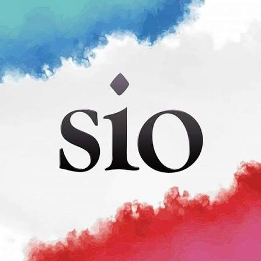
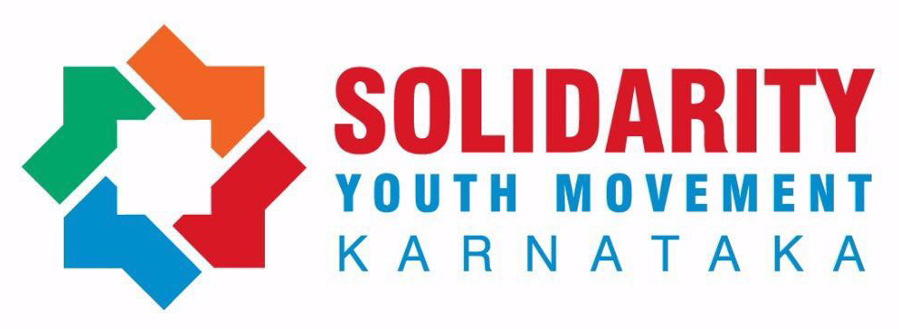
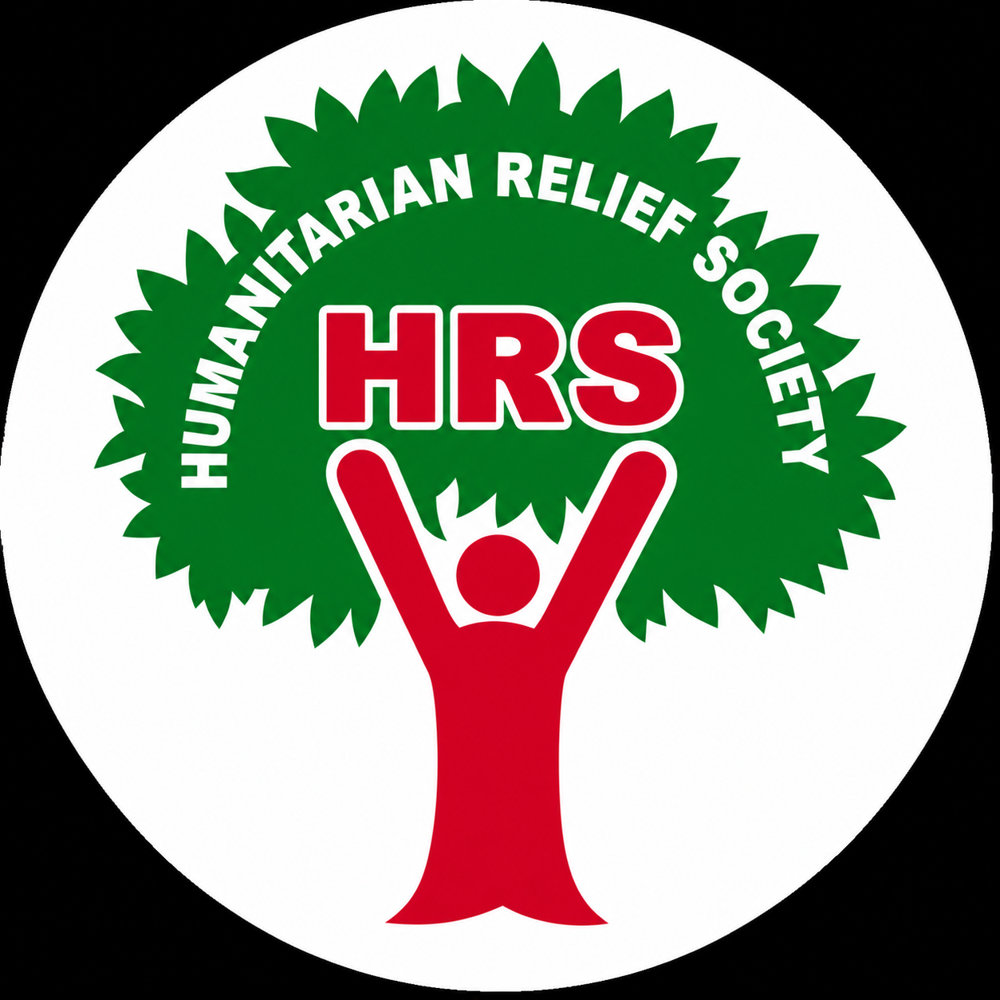

An independent introduction
India's oldest organised Islamic movement, still finding its shape.
Jamaat-e-Islami Hind is a nationwide religious and social organisation working through education, welfare and community reform — and the parent body of three organisations most people meet before they meet it: SIO, Solidarity and the Humanitarian Relief Society.
- Founded
- 16 April 1948, Allahabad
- Headquarters
- Jamia Nagar, New Delhi
- Present Ameer
- Syed Sadatullah Husaini
Origins
A single movement, split by a border. What began in Lahore in 1941 became three separate national organisations after Partition — this is the Indian branch.
-
1941
Maulana Abul A'la Maududi founds Jamaat-e-Islami in Lahore, in undivided India, as a movement for Islamic revival grounded in scholarship and organised community life.
-
1947
Partition divides the subcontinent. Members who remain in the new Republic of India begin the work of building an independent structure, separate from the organisations that continue in Pakistan and, later, Bangladesh.
-
1948
240 delegates meet in Allahabad on 16 April and found Jamaat-e-Islami Hind as its own body, with its own constitution. Maulana Abul Lais Islahi Nadvi is elected the first Ameer.
-
1956
A revised constitution comes into effect, setting out how the organisation would work within India's secular, multi-religious democracy rather than pursue a separate Islamic state.
-
1960
After moves through Azamgarh, Malihabad and Rampur, the national headquarters settles in Delhi, where it remains today in the Jamia Nagar neighbourhood of Okhla.
-
Today
JIH operates as a national network of state units, running schools, relief efforts, publishing houses and the three organisations introduced below — with Syed Sadatullah Husaini serving as the current Ameer.
What the Jamaat does
Its own literature groups the work into a handful of recurring commitments, repeated at every level from the national office down to the local unit.
Dawah
Presenting Islamic teaching to the wider public through lectures, literature and everyday conversation, rather than through state power.
Education
Running schools, madrassas and training institutes that combine religious instruction with a standard modern curriculum.
Social reform
Campaigns on literacy, addiction, dowry and community conduct, aimed at the Jamaat's own constituency as much as at wider society.
Khidmat-e-Khalq
Direct service to people in need — healthcare camps, poverty relief and disaster response, carried out largely through its affiliated bodies.
Interfaith outreach
Standing dialogue with leaders of other faiths, framed by the organisation as a way to keep communal relations workable at the local level.
Publishing
A network of presses and periodicals — including Markazi Maktaba Islami and titles such as Radiance Viewsweekly — that carries the Jamaat's positions into print.
How it is organised
JIH describes itself as a consultative body — decisions move through elected councils rather than a single office, at least in principle.
Elected to lead the organisation nationally and chair its central consultative body.
An elected council that sets policy and holds the national leadership to account.
Appointed for each state zone, or Halqa, to run the organisation regionally.
The base level of membership, where most direct community work actually happens.
The wider family
Most people encounter the Jamaat's world through one of these three organisations before they encounter the Jamaat itself. Each has its own history, leadership and register — pick one to go further.

SIO
The Students Islamic Organisation of India — the national students' wing, active on campuses across the country since 1982.
Meet SIO → Est. 2003 · Youth, Kerala
Solidarity
A youth movement born in Kerala when SIO split its student and youth work — now known for street-level activism.
Meet Solidarity → Registered NGO · Relief
HRS
The Humanitarian Relief Society — trained volunteers who respond to floods, earthquakes and communal violence.
Meet HRS →